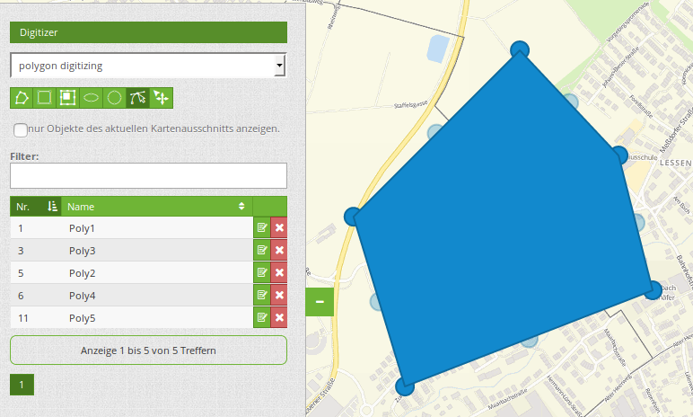
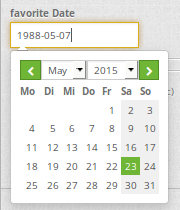
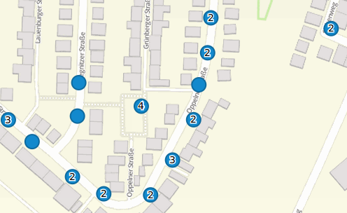

Digitizer¶
The Digitizer element allows building editing-interfaces. Currently you can build up your interface for point, line and polygon editing with a YAML-definition.
Right now PostgreSQL is supported as a database. Oracle and SpatialLite can be used experimentally. The development of the Digitizer allows other data sources so that it can be extended to support - for example - OGC WFS services.
The Digitizer-Element offers complex editing functionality:
- move objects
- add vertices (lines, polygons)
- generation of enclaves, exclaves, circles and ellipses
In connection with the digitization, very complex forms can be generated for the acquisition of data.

The following option for the construction of the forms are available:
- define more then one feature types for digitization. You can switch from one feature type to the other with a select box
- use a table as source. You can also define a filter to get a subset of the table
- Textfields
- Selectboxes, Multiselectboxes
- Radiobuttons, Checkboxes
- Textareas
- Datepicker
- File upload and Image Display
- Definition of tabs
- Definition breaklines
- Definition of Text
- Mandatory fields, regular expressions to valid the content are possible
- Help texts
{kind=link}
Setup¶
You can only use the element in the sidepane.

- Title: Title of the element. This is displayed in the layouts list and allows you to define several elements.
- Target: (ID) of the map.
- Schemes: YAML-Definition of the element Digitizer
The Ditigitzer needs access to a database where the editable tables are. You have to define a new database configuration to be able to connect with the geo database. Read more about this at http://doc.mapbender3.org/en/book/database.html
The definition of the Digitizer is done in YAML syntax in the textarea configuration at schemes. Here you define the database connection, the editable table, the form to display the table, the attribute form and other behavior. If errors occur in the database, fields or form, various error messages appear. Via the normal call and app.php comes a general error message. If you want to reproduce the exact error, you should call the page via app_dev.php. In this case, detailed error messages about the error behavior appear.
YAML-Definition for the element Digitizer in the textarea schemes¶
In the following YAML block, the example definition for three Digitizer forms is included. Copy the following block into your Digitizer element to test the capture of points, lines, and polygons. You must first create the database connection and the three demo tables. The SQL commands for creating the tables can be found below. The functionality of the built-in features and additional functions are explained in more detail in this example.
poi:
label: point digitizing
inlineSearch: true
maxResults: 500
featureType:
connection: search_db
table: poi
uniqueId: gid
geomType: point
geomField: geom
srid: 4326
openFormAfterEdit: true
zoomScaleDenominator: 500
allowEditData: true
allowDelete: true
allowDigitize: true
useContextMenu: true
toolset:
- type: drawPoint
- type: moveFeature
popup:
title: point test suite
width: 500px
searchType: currentExtent
tableFields:
gid: {label: Nr. , width: 20%}
name: {label: Name , width: 80%}
styles:
default:
strokeWidth: 2
strokeColor: '#0e6a9e'
fillColor: '#1289CD'
fillOpacity: 1
fillWidth: 2
pointRadius: 10
select:
strokeWidth: 3
strokeColor: '#0e6a9e'
fillOpacity: 0.7
pointRadius: 10
formItems:
- type: tabs
children:
- type: form
title: Basic information
css: {padding: 10px}
children:
- type: label
title: Welcome to the digitize demo. Try the new Mapbender3 feature!
- type: input
title: Name
mandatory: true
name: name
mandatoryText: Please give a name to the poi.
infoText: "Help: Please give a name to the new object."
- type: input
title: Title
mandatory: false
name: title
mandatoryText: Please give a title to the poi.
- type: textArea
name: abstract
title: Abstract
placeholder: 'please edit this field'
- type: select
title: Type
name: type
options: {A: A, B: B, C: C, D: D, E: E}
- type: breakLine
- type: form
title: Personal information
css: {padding: 10px}
children:
- type: label
title: Please give us some information about yourself.
- type: fieldSet
children:
- type: input
title: Firstname
name: firstname
css: {width: 30%}
- type: input
title: Lastname
name: lastname
css: {width: 30%}
- type: input
title: E-Mail
name: email
css: {width: 40%}
- type: select
multiple: false
title: Interests
name: interests
options: {maps: maps, reading: reading, swimming: swimming, dancing: dancing, beer: beer, flowers: flowers}
- type: date
title: favorite Date
name: date_favorite
placeholder: Please add a date in the following style dd-mm-yy.
dateFormat: dd-mm-yy
value: 01-01-2016
mandatory: true
css: {width: 25%}
- type: breakLine
- type: breakLine
- type: checkbox
name: public
value: true
title: public (this new object is public)
line:
label: line digitizing
inlineSearch: true
maxResults: 1500
featureType:
connection: search_db
table: lines
uniqueId: gid
geomType: line
geomField: geom
srid: 4326
openFormAfterEdit: true
allowDelete: true
useContextMenu: true
toolset:
- type: drawLine
- type: modifyFeature
- type: moveFeature
popup:
title: line test suite
width: 500px
searchType: currentExtent
tableFields:
gid: {label: Nr. , width: 20%}
name: {label: Name , width: 80%}
styles:
default:
strokeWidth: 2
strokeColor: '#0e6a9e'
fillColor: '#1289CD'
fillOpacity: 1
fillWidth: 2
pointRadius: 10
select:
strokeWidth: 3
strokeColor: '#0e6a9e'
fillOpacity: 0.7
pointRadius: 10
formItems:
- type: form
title: Basic information
css: {padding: 10px}
children:
- type: label
title: Welcome to the digitize demo. Try the new Mapbender3 feature!
- type: input
title: Name
name: name
mandatory: true
mandatoryText: Please give a name to the new object.
infoText: "Help: Please give a name to the new object."
- type: select
title: Type
name: type
options: {A: A, B: B, C: C, D: D, E: E}
polygon:
label: polygon digitizing
inlineSearch: true
maxResults: 1500
featureType:
connection: search_db
table: polygons
uniqueId: gid
geomType: polygon
geomField: geom
srid: 4326
openFormAfterEdit: true
allowDelete: false
useContextMenu: true
toolset:
- type: drawPolygon
- type: drawRectangle
- type: drawDonut
- type: drawEllipse
- type: drawCircle
- type: modifyFeature
- type: moveFeature
popup:
title: polygon test suite
width: 500px
searchType: currentExtent
tableFields:
gid: {label: Nr. , width: 20%}
name: {label: Name , width: 80%}
styles:
default:
strokeWidth: 2
strokeColor: '#0e6a9e'
fillColor: '#1289CD'
fillOpacity: 1
fillWidth: 2
pointRadius: 10
select:
strokeWidth: 3
strokeColor: '#0e6a9e'
fillOpacity: 0.7
pointRadius: 10
formItems:
- type: form
title: Basic information
css: {padding: 10px}
children:
- type: label
title: Welcome to the digitize demo. Try the new Mapbender3 feature!
- type: input
title: Name
mandatory: true
name: name
mandatoryText: Please give a name to the new object.
infoText: "Help: Please give a name to the new object."
- type: select
title: Type
name: type
options: {A: A, B: B, C: C, D: D, E: E}
SQL for the demo tables¶
The following SQL commands must be executed in your database. You create three demo tables so that the individual functions can be tested using the YAML definition shown above.
create table public.poi (
gid serial,
name varchar,
type varchar,
abstract varchar,
public boolean,
date_favorite date,
title varchar,
firstname varchar,
lastname varchar,
email varchar,
interests varchar,
user_name varchar,
group_name varchar,
modification_date date,
my_type varchar,
file_reference varchar,
x float,
y float,
geom geometry(point,4326),
CONSTRAINT pk_poi_gid PRIMARY KEY (gid)
);
create table public.lines (
gid serial,
name varchar,
type varchar,
abstract varchar,
public boolean,
date_favorite date,
title varchar,
firstname varchar,
lastname varchar,
email varchar,
interests varchar,
length float,
category varchar,
user_name varchar,
group_name varchar,
modification_date date,
my_type varchar,
file_reference varchar,
x float,
y float,
geom geometry(linestring,4326),
CONSTRAINT pk_lines_gid PRIMARY KEY (gid)
);
create table public.polygons (
gid serial,
name varchar,
type varchar,
abstract varchar,
public boolean,
date_favorite date,
title varchar,
firstname varchar,
lastname varchar,
email varchar,
interests varchar,
area float,
category varchar,
user_name varchar,
group_name varchar,
modification_date date,
my_type varchar,
file_reference varchar,
x float,
y float,
geom geometry(polygon,4326),
CONSTRAINT pk_polygons_gid PRIMARY KEY (gid)
);
Usage¶
General¶
The Digitizer allows the editing of FeatureTypes. These are based on points, lines and polygon-geometries and their attribute-data. The attribute-data is displayed in the formular of the Digitizer. The geometry-editing is done via the map.
Create geometries¶
Every FeatureType can unlock several Toolsets that can be used in the button-bar of the Digitizer.
For example in the FeatureType “poi” the toolset “drawPoint” unlocks the button to create a new point, the toolset “modifyFeature” unlocks the move-button.
{kind=link}
Save, Delete, Cancel¶
Three buttons are available in the attribute-dialog: Save, Delete and Cancel.
Saving changes only happens, if the “Save” button in the attribute-dialog is pressed. A move of the geometry alone doesn’t save the feature directly (to avoid unnecessary stores into the database). It is mandatory to open the attribute-dialog and to click Save, yet.
{kind=link}
- Save: Saves the geometry and the attribute-data into the database.
- Delet: Deletes the data.
- Cancel: Doesn’t save and delete the data, but keeps the geometry for further editing in the internal storage. The geometry is still present in the map and can be adjusted (for example with polygons). Attribute data is not stored.
Several options exit in the basic definitions, to customize the behaviour.
- allowEditData: Show the Save button.
- allowDelete: Show the Delete button.
- allowCancelButton: Show the Cancel button.
- allowDeleteByCancelNewGeometry: Behaviour of the Cancel button.
The Delete of a feature can be done with the dialog and from the table.
Vertices¶
Editing polygons allows you to edit, move and delete vertices. The “edit vertices” button expects you to select a polygon. It will then be shown with its vertices.
{kind=link}
The existing vertices are displayed opaque, possible new vertices are always in the middle of an edge, are light transparent and can be added by clicking on them.
Existing vertices can be deleted with the Delete-Key of the keyboard. To do this, move your mouse-pointer over a vertex and press the Del-key. Note: If the deletion of a vertex doesn’t work in the first place, a click with the right mouse-button on the map may help. Especially with activated context-menu some events can currently get stuck.
Configuration¶
The following chapters explain the individual components of the Digitizer that build up the base-structure and which can be used in the formular.
Feature basic definition¶
A basic definition, here for the poi-example, may look like the following snippet:
poi:
label: point digitizing
maxResults: 500
minScale: 5000
featureType:
connection: search_db
table: poi
uniqueId: gid
geomType: point
geomField: geom
srid: 4326
openFormAfterEdit: true
zoomScaleDenominator: 500
allowEditData: true
allowDelete: true
allowDigitize: true
[...]
popup:
[...]
The possible options are:
- label: Label of the Digitizer popup
- minScale: Minimum scale, where the features should be displayed in the map (e.g. minscale: 5000 = show from a scale ‘over’ 1:5000, when zooming out).
- maxResults: Maximum number of results
- featureType: Connection to the database
- connection: Name of the database-connection from the parameters/config.yml
- table: Table-name in which the FeatureTypes are stored
- uniqueId: Column-name with the unique identifier
- geomType: Geometry-type
- geomField: Column-name in which the geometry is stored
- srid: Coordinate-system in EPSG-code
- openFormAfterEdit: After creating a geometry the form popup is opened automatically to insert the attribute data. [true/false] Standard is true.
- zoomScaleDenominator: Zoom-scales to use for zooming to a feature.
- allowEditData: Allow or disable functions to edit or remove data. [true/false]. If true, the Save button is visible.
- allowDigitize: Allow to save data [true/false]. * allowDelete: Allow to delete data [true/false]. The Delete button is visible.
- allowDigitize: Allow to create new features [true/false]. if false, no Digitizer buttons will occur (new Point, move, etc.).
- useContextMenu: Show the context-menu of a feature. [true/false]
- allowCancelButton: Show the Cancel button [true/false]. See Save, Delete, Cancel.
- allowDeleteByCancelNewGeometry: If true: When you create a new feature, the Cancel button will behave like the Delete button: The feature is removed from the map and the table. This is not the case if you edit an existing feature. [true/false]
- displayOnInactive: The current FeatureType will still be displayed on the map, although the Digitizer is deactivated in the Sidepane (Accordion, Tabs) [true/false]. If switched to true, this option is a bit tricky, due to the still activated Digitizer events but will be helpful for experienced users.
Definition of the popup¶
popup: # Define the form as a popup. Further experimental adaptations here: http://api.jqueryui.com/dialog/
title: POI # Definition of the popup title
height: 400 # height of the popup
width: 500 # width of the popup
#modal: true # Everything except the form window is grayed out and the position and size of the window is fixed for the duration of the data collection.
#position: {at: "left+20px", my: "left top-460px"} # Position of the popup in the browser area
Definition of the feature table¶
The Digitizer provides an object table. This can be used to navigate to features (zoom on the objects) and open the editing form. The object table can be sorted. The width of the individual columns can optionally be specified in percent or pixels.
- tableFields - define the columns for the feature table.
- searchType all or currentExtent
searchType: currentExtent # [currentExtent | all] currentExtent lists only the features displayed in the current extent in the table (default). all lists all features in the table.
tableFields: # definition of the colums to be displayed
gid: {label: Nr. , width: 20%} # [table column]: {label: [label text], width: [css-definition, like width]} # Definition of a column
name: {label: Name , width: 80%}
Tabs (type tabs)¶
Form elements can be placed unto different Tabs. The formItem type “tabs” is used for this.
formItems:
- type: tabs # Type tabs creates tabs in the popup
children: # The tabs are defined as sub-objects (children) of the form.
- type: form
title: Basic information # title of the tabs
css: {padding: 10px}
children: # Multiple subobjects in groups can be used to arrange data in the form next to each other
- type: label
title: Welcome to the digitize demo. Try the new Mapbender3 feature!
...
Textfields (type input)¶
- type: input # element type definition
title: Title for the field # labeling (optional)
name: column_name # reference to table column (optional)
mandatory: true # specify mandatory field (optional)
mandatoryText: You have to provide information.
cssClass: 'input-css' # additional css definition (optional)
value: 'default Text' # define a default value (optional)
placeholder: 'please edit this field' # placeholder appears in the field as information (optional)
Selectbox (selectbox or multiselect [type select])¶
By defining a selectbox, predefined values can be used in the form. You can choose between a selectbox with a selectable entry (type select) or a multiselectbox with several selectable entries (type multiselect).
(1) select - one selectable entry
- type: select # element type definition
title: select a type # labeling (optional)
name: my_type # reference to table column (optional)
multiple: false # define a multiselect, default is false
options: # definition of the options (key, value)
1: pub
2: bar
3: pool
4: garden
5: playground
(2) multiselect - several selectable entries
The Multiselect-Box is activated by the attribute “multiple: true”. You can choose multiple entries in the selectbox. The usage and their requirements of the database may vary. In general with the example above, you can switch the “interests” in the POIs to multiselects. The database fields is still a character varying.
-
type: select
multiple: true
title: Interests
name: interests
options:
maps: maps
reading: reading
swimming: swimming
dancing: dancing
beer: beer
flowers: flowers
The SQL (if maps and reading were chosen):
gisdb=> select interests from poi where gid=3;
interests
--------------
maps,reading
(1 row)
On saving the keywords are saved in the database (for example: “dancing: Tanzen” and “flowers: Blumen” stores “dancing,flowers”).
- type: select # element type definition
title: select some types # labeling (optional)
name: my_type # reference to table column (optional)
multiple: true # define a multiselect, default is false
options:
a: a # definition of the options (key, value)
b: b
c: c
Get the options for the selectbox via SQL
Wir a SQL request, the values of the selectbox can be directly pulled from the database. In this case, the key value mapping is not possible and only the indices of the entries can be stored.
- type: select # element type definition
title: select some types # labeling (optional)
name: my_type # reference to table column
connection: connectionName # Define a connection selectbox via SQL
sql: 'SELECT DISTINCT key, value FROM tableName order by value' # get the options of the
Text/Label (type label)¶
- type: label # element type definition, label writes a non-editable text to the form window.
text: 'Please give information about the poi.' # define a text
Text (type text)¶
Texts can be defined as a label in the form. In this case, fields of the data source can be accessed by using JavaScript.
- type: text # Type text for generating dynamic texts from the database
title: Name # Label (optional)
name: name # Name of the field (optional)
css: {width: 80%} # CSS definition (optional)
text: data.gid + ': ' + data.name
# Text definition in JavaScript
# data - data is the object, that gives access to all fields.
# z.B.: data.id + ':' + data.name
Textareas (type textarea)¶
Similar to the text field via type input (see above), text areas can be created that can contain several lines using type textArea.
- type: textArea # Typ textArea creates a text area
rows: 4 # Number of rows for the text area that appears when the form is opened. Field can be expanded by mouse in the form.
name: beschreibung # table column
title: Bestandsaufnahme Bemerkung # Label (optional)
Breaklines (type breakline)¶
- type: breakline # element type definition, will draw a line
Checkboxes (type checkbox)¶
- type: checkbox # Type checkbox creates a checkbox. When activated, the specified value (here 'TRUE') is written to the database.
title: Is this true? # Label (optional)
name: public # table column
value: true # parameter when activating the checkbox is stored in DB (here 'TRUE').
Mandatory fields¶
The notes for a mandatory field appear above the used fields. In the case of a missing entry in a defined mandatory field, this will be marked in red and (if defined) a speech bubble will appear. The object can not be saved if mandatory data is missing.
Note: When using multiple tabs in the form, the creator may set an entry incorrectly on a non-visible tab in a mandatory field, so the saving process does not work. No error message appears outside the form. The applicant has to check the information in the form (label: red border / speech bubble with reference) before it can be stored correctly.
- type: [Angabe zum Feldtyp] # Each field can be made mandatory
mandatory: true # true - field has to be set. Else you can't save the object. Regular expressions are possible too - see below.
mandatorytitle: Mandatory info! # Text that appears in the field when the field is not filled or filled with an invalid value.
mandatoryText: Please choose a type! # Text that is displayed in a speech bubble above the field when the field is not filled when it is saved or invalid.
mandatory: /^\w+$/gi # You can define a regular expression to check the input for a field. You can check f.e. for email or numbers. Read more http://wiki.selfhtml.org/wiki/JavaScript/Objekte/RegExp
# Check if input is a number
mandatory: /^[0-9]+$/
mandatoryText: Only numbers are valid for this field!
Datepicker (type date)¶
{kind=link}
- type: date # click in the textfield opens a datepicker
title: favorite Date # Label (optional)
name: date_favorite # data table
placeholder: Please add a date in the following style yy-dd-mm # placeholder for the dateformat (optional)
dateFormat: yy-dd-mm # define the display of the dateformat (optional), default is dd.mm.yy which means 16.01.2016. Examples yy/mm/dd (2017/01/16) or yy-mm-dd (2017-01-16).
value: 2016-01-01 # define a start value for the datepicker (optional)
When using a column with the table format date, the date is written into the date database column, regardless of the dateFormat specification in the format YYYY-MM-DD. If the parameter dateFormat is used with a different dateFormat, a table field in the text format (for example, date_text varchar) must be created.
Helptexts to the form-elements (attribute infotext)¶
The infotext can appear over every field, regardless of whether this is a mandatory field or not. If a infotext is specified, an info button appears above the field. Clicking on this button opens the information text.
- type: [type name] # every field, regardless of whether this is a mandatory field or not
infoText: Please note - only numbers are valid for this field. # Notice which will be displayed by i-symbol
Element groups (type: fieldSet)¶
Elements can be grouped together in one row to provide logical connections or save space. To define a group you have to set type fieldSet and afterwards define the children which shall be grouped.
For each children you can define a width to controll the pace for each element.
- type: fieldSet # Grouping of fields, regardless of field type
children: # Define the group elements by children
- type: input
title: Firstname
name: firstname
css: {width: 30%} # Specifies the width of the group element. Together, the elements should be 100%.
- type: input
title: Lastname
name: lastname
css: {width: 30%}
- type: input
title: E-Mail
name: email
css: {width: 40%}
File upload (type file)¶
The file upload can be used to link files to a database column in the form. To do this, the uploaded files are stored in Mapbender3 and the path is noted in the column.
The storage path and the name of the stored files can not yet be changed. The file upload always saves to the same directory and is built up from the parameters:
- tablename
- columnname
- filename
The filesystem path is:
- <mapbender>/web/uploads/featureTypes/[tablename]/[columnname]/[filename].png
The linked URL stored in the database column is:
![http://localhost/mapbender/uploads/featureTypes/[tablename]/[columnname]/[filename].png](http://localhost/mapbender/uploads/featureTypes/[tablename]/[columnname]/[filename].png){kind=link}
- type: file # Typ file for the upload of files
title: Dateiupload # Label (optional)
text: Laden Sie ein Bild hoch. # Informationtext (optional)
name: file_reference # table column for the storage path
# Experimental parameters:
#accept: image/* # Pre-selection of elements in the image format (window for file upload opens with restriction filter)
# Other file-formats can be still uploaded
Notes: At this time, a “thumbnail” directory is created, which includes a smaller version of an image file. In future development this will be changed.
A possibility to show the uploaded images is the image-element.
Images (type image)¶

The image-element can be used to view an picture in the form. You can display images by specifying a URL in a database field or URL using the src parameter.
Images, which are marked by the element file in a table column can thus also directly integrated and displayed.
The image can be specified by specifying the two parameters src and name.
- src: Url-path or file path (can be relative path)
- name: Url-path or file path from the table column (can’t be relative path)
- definition of name and src together: The content of the database column from name is taken. If the column is empty, the src is used.
- type: image # Feature type field name image.
name: file_reference # Reference to the database column. If defined, the path or URL in the field can be used and replaces "src" option
src: "bundles/mapbendercore/image/logo_mb3.png" # Specify a path or URL to an image. If the path is relative use relative: true.
relative: true # Optional. Default value is false. If true, the "src" path is determined from the "/web" directory.
enlargeImage: true # Image is enlarged to original size/ maximum resolution by clicking on the preview image. It is not scaled to screen size.
# Experimental information about styling
imageCss:
width: 100% # Image CSS Style: Scales the preview image in the form, different from the original size in percent.
Caution: If only name and not name and src are specified, the wrong image appears from the previous data entry, if the column is empty.
Dynamic paths (eg “bundles/mapbendercore/image/[nr].png” or ‘bundles/mapbendercore/image/’ + data.image_reference) can not be specified.
One way to work around this is to create a trigger that will merge the path and contents of a table field into the database column.
Definition of the available toolsets (Toolset Type)¶
Toolset types:
- drawPoint - Draw point
- drawLine - Draw a line
- drawPolygon - Draw polygon
- drawRectangle - Draw rectangle
- drawCircle - Draw circle
- drawEllipse - Draw ellipse
- drawDonut - Draw a Donut (enclave)
- modifyFeature - Move vertices of a geometry
- moveFeature - Move geometry
- selectFeature - Geometry de-/select (experimental). There is no interaction with the table yet and the available workflows are limited to the Delete operation.
- removeSelected - delete selected geometry (experimental). Deletes all objects selected in the map.
- removeAll - Caution: remove all geometries from the table
YAML-Definition of toolset types
polygon:
[...]
toolset:
- type: drawPolygon
- type: drawRectangle
- type: drawDonut
- type: removeSelected
Search in the tables (inline Search)¶
You can use the inline search to search for a element in the table. The activated element displays a search bar above the table. It shows all the search results for records of the table.
poi:
...
inlineSearch: true # true: allows the search in the table, default is true
...
{kind=link}
Clustering (experimental)¶
By clustering the objects can be combined on the map. Depending on the defined distance and zoom level different numbers of objects can be clustered.
Due to the complexity of the Clustering, future versions may have changes in functionality and syntax, so we define that still as experimental. Dependencies are to the display of features in the current extent/all areas and the different geometry types.
{kind=link}
Definition of the cluster element:
- scale: Zoom level.
- distance: distance between features in m to activate the clustering.
- disable: zoom level to disable the clustering.
poi:
...
clustering:
-
scale: 10000 # Zoom level
distance: 60 # distance between features to cluster
-
scale: 2500
distance: 40
-
scale: 1000
distance: 20
-
scale: 500
distance: 1
disable: true # disable clustering at defined zoomlevel
...
Events¶
Different events exist that can be associated to a feature to manipulate attributes before or after an action.
- onBeforeSave: Event before the storage of a new/ modified information
- onAfterSave: Event after the storage of a new/ modified information
- onBeforeUpdate: Event before the update of a modified information
- onAfterUpdate: Event after the update of a modified information
- onBeforeSearch: Event before the search in the SearchField of the Digitizer
- onAfterSearch: Event after the search in the SearchField of the Digitizer
- onBeforeRemove: Event before deleting data
- onAfterRemove: Event after deleting data
In difference to the Save-events, the update-events work only on an update of the data, not on creation.
Note: The events are still in development and should be used with caution. The correct matching of the events and their dependencies are not yet finished and may be changed in future versions.
The following sections show some examples.
Storage of attibute data in an additional attribute-columns:
This example shows how data can be stored in an additional attribute-column after saving. In this case it is done with two geometry-columns “geom” and “geom2”. When saving, the data of “geom” should be saved in the field “geom2”.
Depending on the use-case the onBeforeInsert or the onBeforeUpdate event can be used.
At the time of the saving-process the new geometry doesn’t yet persist in the database. Therefore it cannot be accessed as a feature but only via the corresponding “item”, an internal Digitizer structure. This “item” are based on the formular and the defined attribute fields.
events:
onBeforeInsert: $item['geom2'] = $item['geom'];
onBeforeUpdate: $item['geom2'] = $item['geom'];
In this event the value of “geom2” is overwritten with the value of “geom”.
Storage of different geometry-types:
The above scenario can be extended to a slightly constructed example in which simultaneously different geometry types shall be saved. With the help of PostGIS lines are interpolated to points. The Digitizer can use an event to fire the according SQL statement.
events:
onBeforeInsert: |
$sql = "SELECT
ST_Line_Interpolate_Point('".$item['geomline']."'::geometry, 1) as geom";
$stmnt = $this->getConnection()->prepare($sql);
$stmnt->execute();
$result = $stmnt->fetchAll();
$item['geompoi'] = $result[0]['geom'];
The onBeforeInsert event is used here. The pipe symbol “|” after the event signals a following multiline statement. This blog contains PHP code, which calls SQL-statement. The SQL-statement calls the ST_Line_Interpolate_Point function of PostGIS and commits the digitized line. Because this line is not yet persisted in the database, you have to access it with the “item” (geomline). The next lines build up the SQL Statement and deliver it to the SQL-Connection defined in the featuretype. The last line writes the resulting point (geompoi) into the point-geometry-field.
Design and Styles¶
By specifying a style the way the objects are displayed on the map can be defined. Default defines the normal display of the objects on the map and Select defines the appearance of the selected objects.
poi:
...
styles:
default:
strokeWidth: 2
strokeColor: '#0e6a9e'
fillColor: '#1289CD'
fillOpacity: 1
fillWidth: 2
pointRadius: 10
select:
strokeWidth: 3
strokeColor: '#0e6a9e'
fillOpacity: 0.7
pointRadius: 10
...
YAML-Definition for the element Digitizer in mapbender.yml¶
This code-snippet shows how to include the Digitizer into a YAML-file based application.
sidepane:
digitizer:
class: Mapbender\DigitizerBundle\Element\Digitizer
title: Digitalisation
target: map
schemes:
...
Class, Widget & Style¶
- Class: Mapbender\DigitizerBundle\Element\Digitizer
- Widget: mapbender.element.digitizer.js
- Style: sass\element\digitizer.scss